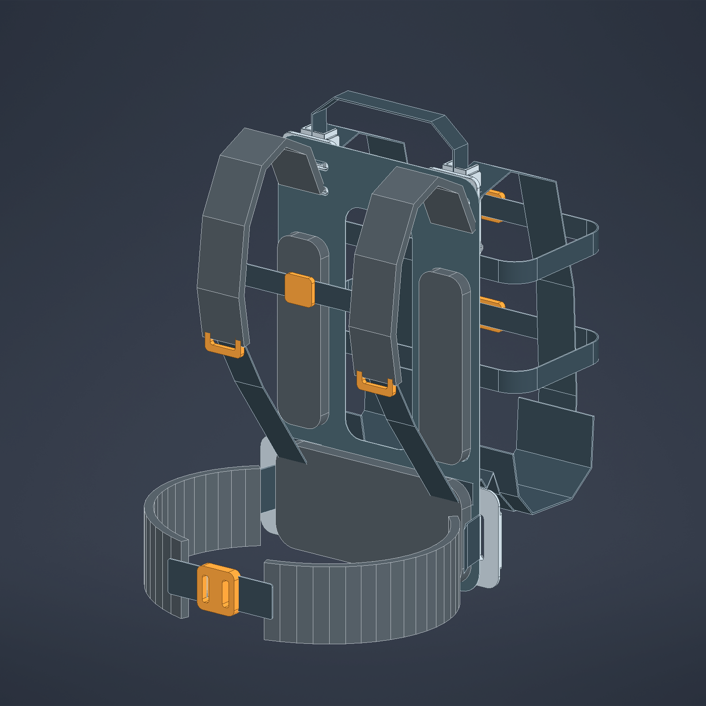
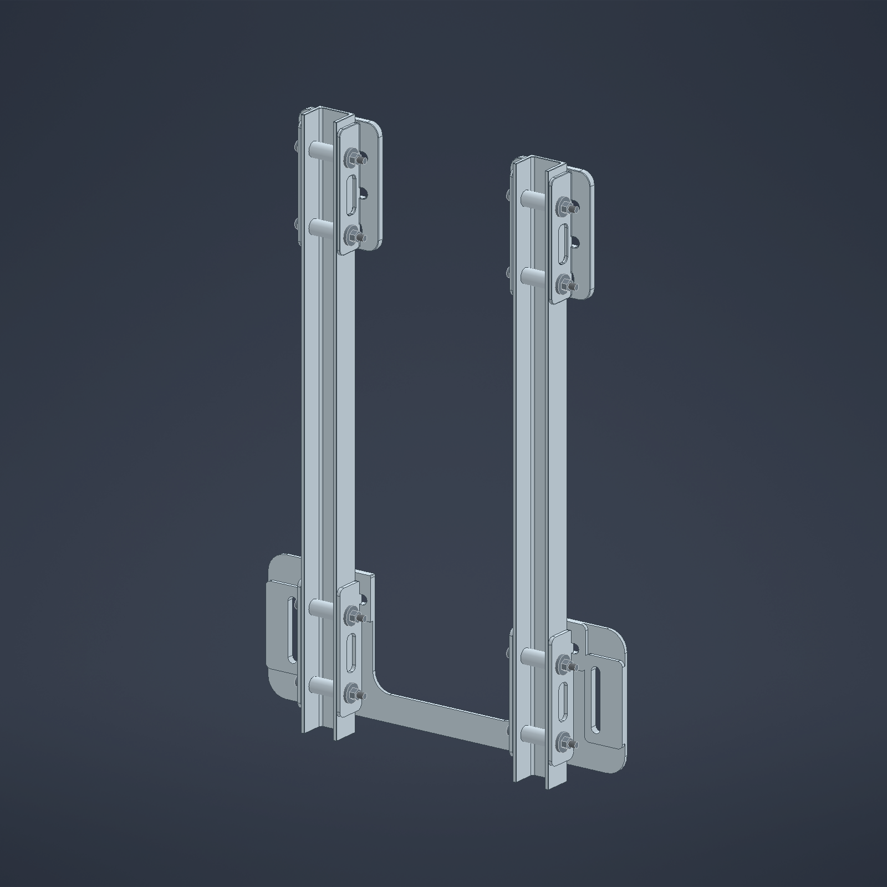

Proyecto universitario · en desarrollo
Diseñando apoyo para quienes combaten el fuego
SEDAC explora un sistema auxiliar que ayude a apoyar y estabilizar la bomba de espalda flexible que usan brigadas forestales, sin rigidizar el cuerpo ni sumar peso innecesario.
01 · El desafío
Una bomba llena pesa, y el terreno no ayuda
En trabajo forestal la bomba de espalda se lleva durante horas: se camina, se sube, se agacha, se corre y se retira el equipo. La carga cambia de posición con cada paso y el cuerpo tiene que absorberla. El problema no es solo cuánto pesa, sino cómo se transmite.
La carga viaja
El agua se mueve dentro de una mochila flexible. El centro de masa no está fijo y cada cambio de postura lo desplaza.
El cuerpo se mueve
Hombros y cintura no se mueven juntos: la espalda rota y se inclina. Un apoyo demasiado rígido obliga a compensar con otras zonas.
El peso añadido compite
Cada gramo de estructura es un gramo que también se transporta. Apoyar mejor no puede costar más carga de la que resuelve.
El objetivo del proyecto no es “endurecer” la espalda, sino repartir el apoyo y conservar la movilidad relativa entre el equipo y el cuerpo.
Estas ideas son el marco de diseño, no resultados demostrados. Todavía no hay mediciones de la bomba real, del centro de gravedad ni del reparto de cargas entre hombros y cinturón.
Estado: hipótesis de prediseño pendientes de comprobación física.
02 · La propuesta
Una estructura ligera que acompaña, no que inmoviliza
El conjunto parte de la bomba flexible y le agrega lo mínimo para que la carga encuentre un camino reconocible hacia los hombros y el cinturón, dejando que el textil haga el resto.

-
Bomba flexible de agua
La mochila que ya se usa. No se reemplaza: el sistema se adapta a ella y a su forma cuando está llena o vacía.
-
Estructura de aluminio
Dos canales abiertos de 6061-T6 que dan continuidad al apoyo sin cerrar el conjunto en un tubo rígido.
-
Cunas textiles y placa lumbar
Cunas flexibles que reciben la bomba y una interfaz lumbar que reparte la carga hacia el cinturón.
-
Cinturón
Toma parte del peso en la cadera. Cuánto exactamente es una de las cosas que hay que medir.
-
Correas y espaldera
Correas de hombro con ajuste y una espaldera de HDPE de 1 mm que separa, ventila y protege el contacto.
Masas del modelo CAD, sin bomba ni agua. No son pesajes físicos.

En estudio
Lo que todavía se está decidiendo
El prediseño analítico compara secciones del canal y modos de falla con hipótesis de carga explícitas. Las variantes de aligeramiento posteriores son propuestas en estudio: ninguna reemplaza al CAD vigente y ninguna está adoptada.
- Espesor y profundidad del canal: en trade study, no cerrado.
- Uniones y pasadores: tolerancias por definir.
- Textiles, costuras y hebillas: sin ensayo.
- Contacto, desgaste y liberación de emergencia: pendientes.
03 · Movimiento y sensores
Medir cómo se mueve el equipo, no solo cuánto pesa
El plan de evaluación incluye unidades de medición inercial (IMU) para registrar el movimiento durante el uso. Son instrumentos de estudio: sirven para describir cómo se mueve el conjunto, no para afirmar que el diseño mejora el confort.
Sensores
IMU ubicadas en puntos del equipo y del cuerpo para captar aceleración y orientación.
Registro de movimiento
Series temporales de una caminata o de una tarea definida, guardadas para su revisión.
Análisis
Procesamiento de orientación e inclinación, y comparación de tramos entre condiciones.
Comparación
Contraste entre configuraciones del sistema bajo el mismo recorrido y la misma tarea.
Curvas ilustrativas: muestran el tipo de lectura esperada, no resultados de ensayo.
Qué sí pueden decir las IMU: cómo se orienta e inclina el conjunto durante el movimiento, y en qué instantes cambia más.
Qué no pueden decir por sí solas: no miden fuerza ni presión, y no demuestran por sí mismas transferencia de carga, reducción de fatiga ni seguridad.
- Cantidad y ubicación definitiva de sensores: por definir con el plan de ensayo.
- Modelo de sensor y aplicación de registro: no implementados en esta etapa.
- Toda conclusión requerirá ensayos con personas y criterios acordados.
04 · Del diseño a la validación
Lo que ya existe y lo que falta
El proyecto tiene geometría y cuentas. Lo que no tiene todavía es el contacto con la realidad: medir, ajustar y ensayar. Este es el camino previsto.
CAD y prediseño
Modelo nativo en Inventor a escala 1:1 y cribado analítico con hipótesis declaradas.
Medir la bomba real
Masa llena y vacía, centro de gravedad, puntos de apoyo y comportamiento de la mochila.
Ajustar el prototipo
Corregir geometría, uniones y tolerancias a partir de las mediciones.
Ensayos y evaluación
Banco de pruebas, medición instrumentada con IMU y evaluación con usuarios.
Ninguna etapa cumplida hasta hoy equivale a una validación del producto: no hay ensayos de resistencia, fatiga, comodidad ni seguridad realizados sobre el sistema completo.
05 · Sumarse
Un proyecto abierto a miradas distintas
SEDAC se desarrolla en un marco universitario y necesita usuarios, mediciones y crítica. Si trabajas en emergencias, diseño mecánico, textiles técnicos o evaluación de movimiento, tu experiencia cambia decisiones.
- EstadoPrediseño CAD
- Escala1:1 · milímetros
- Materiales base6061-T6 · HDPE · textil
- Validación físicaPendiente
Contacto: sin datos publicados por ahora. La vía de contacto se incorporará cuando el equipo la confirme.